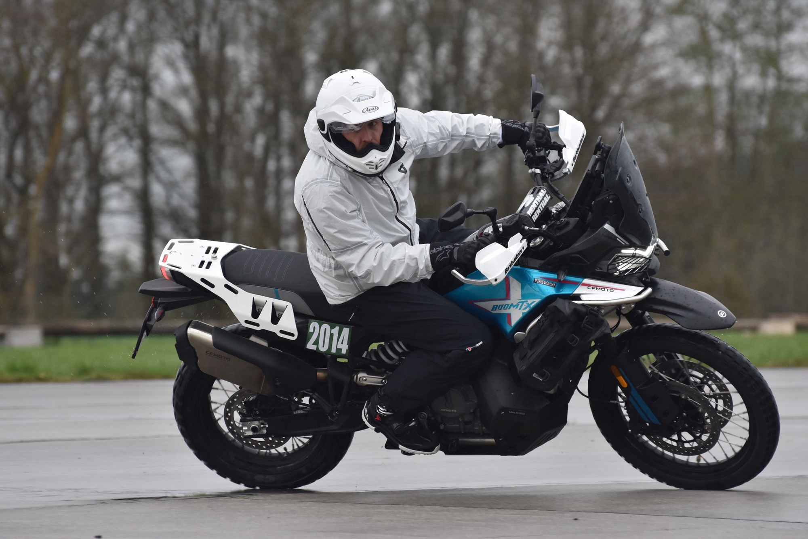
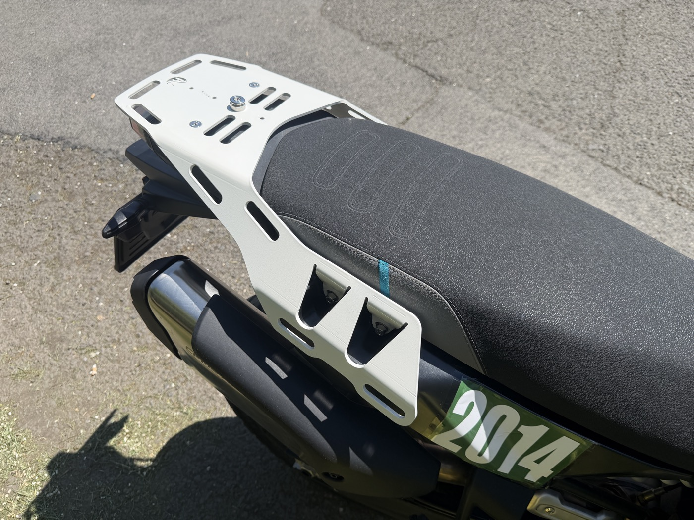
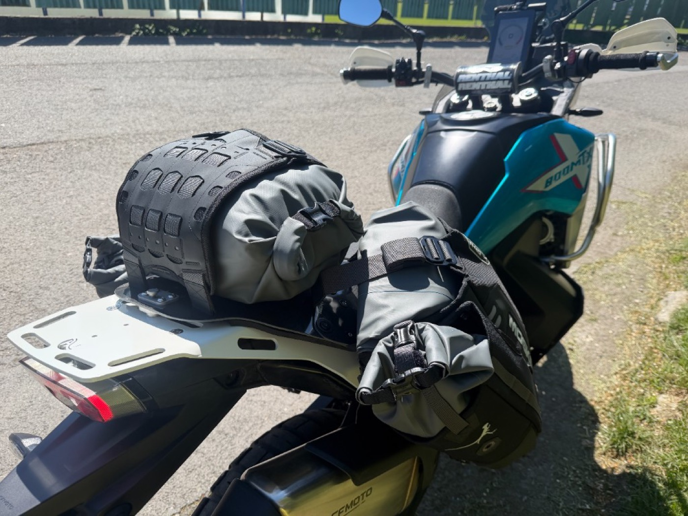
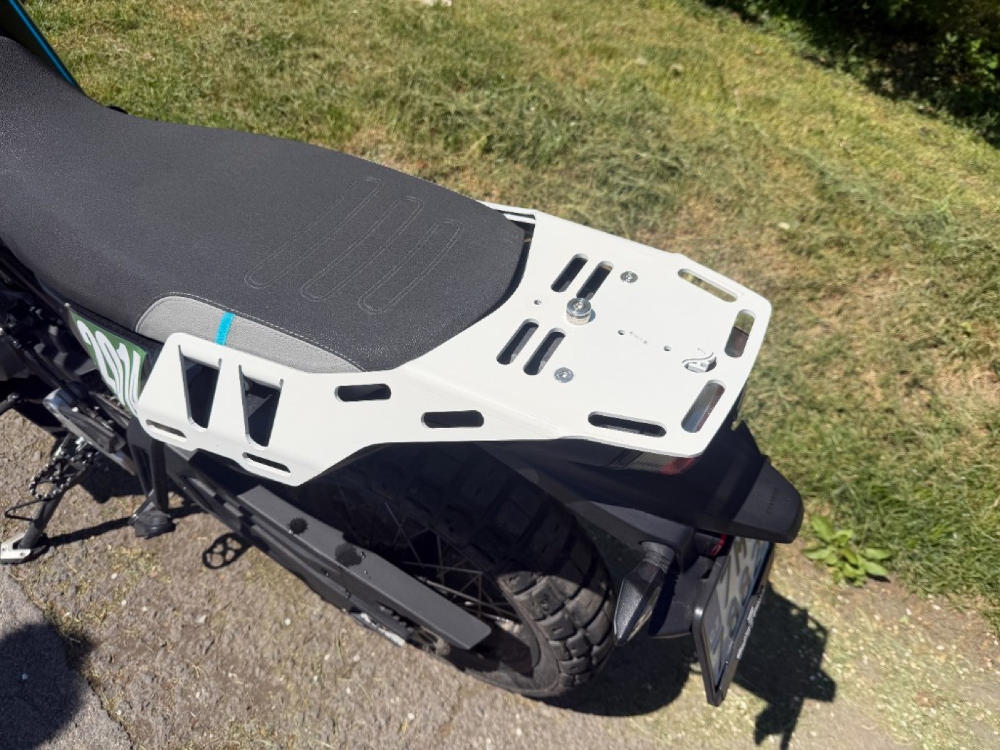
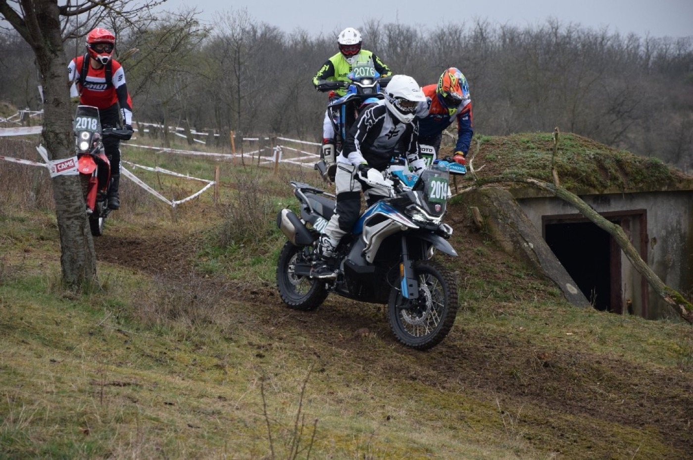
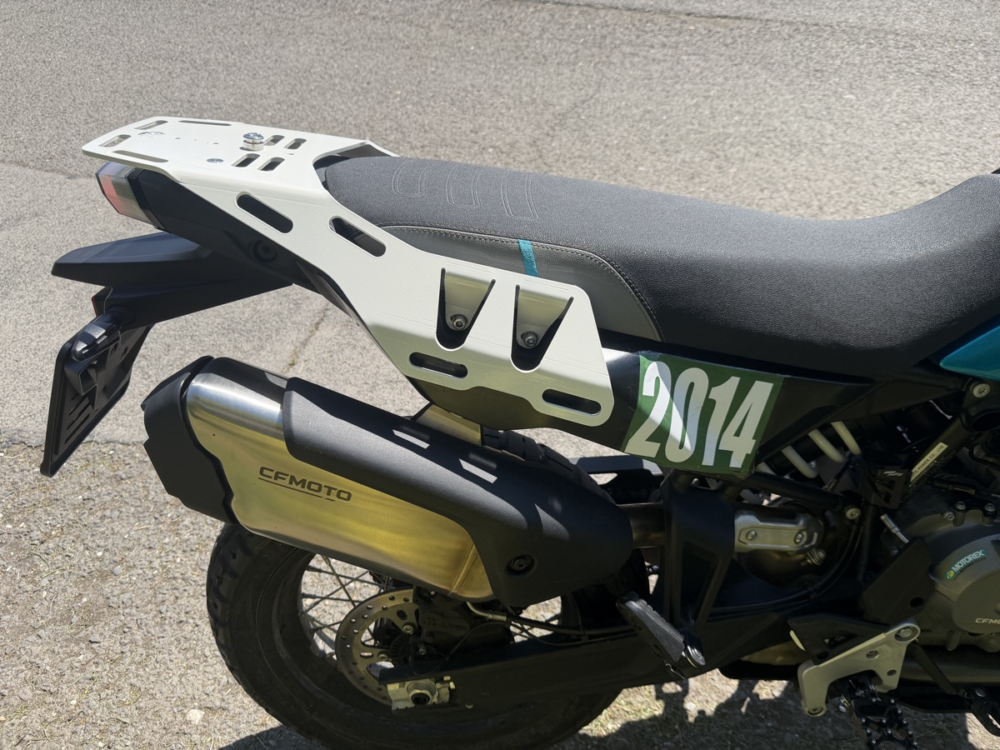
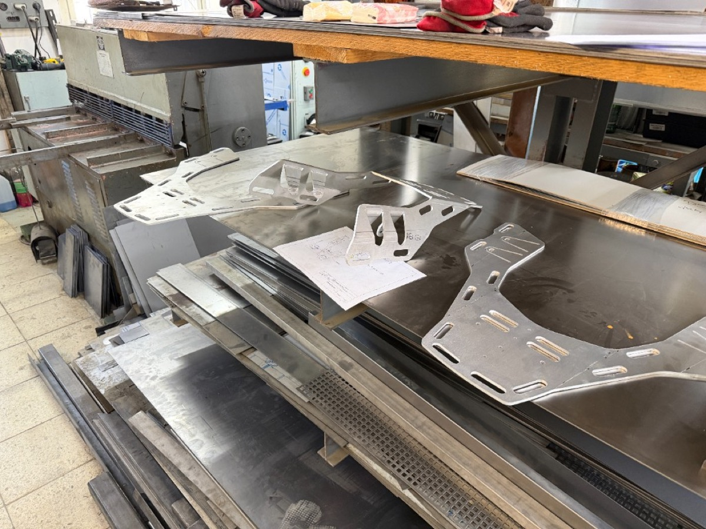
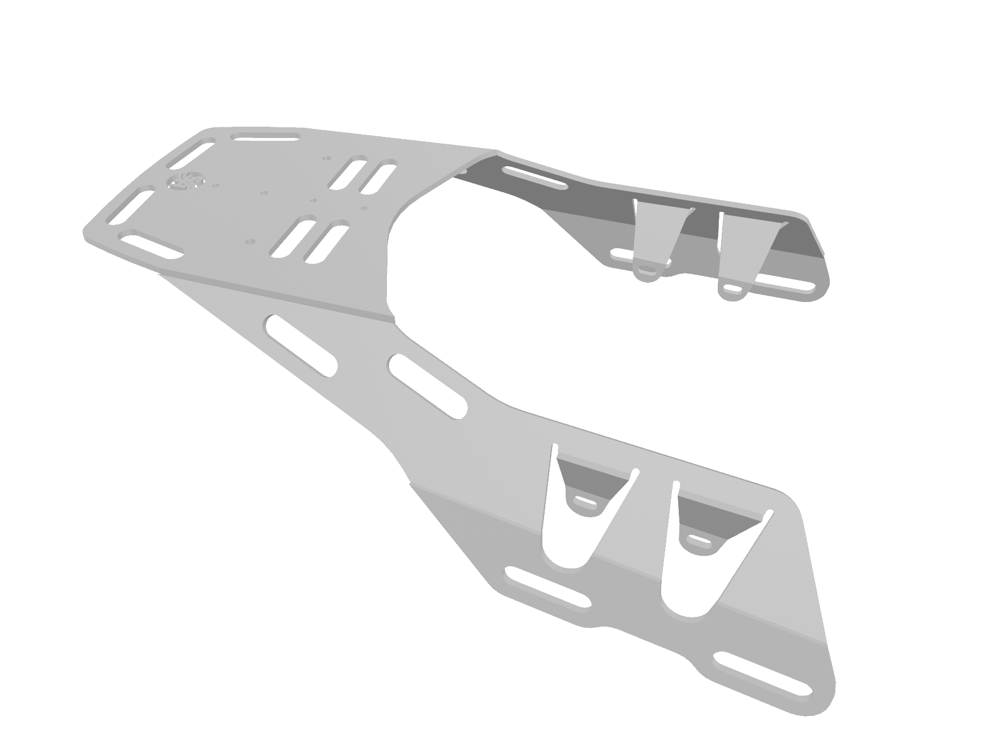

CF MOTO 800MT-X
Zadní nosič pro CF Moto 800MT-X — navržený pro terén a měkké brašny. Rear rack for CF Moto 800MT-X — designed for off-road and soft luggage.
Znáš ten pocit, když hledáš díl na motorku, který by odpovídal tvým představám — a buď nenajdeš nic, nebo se nevyrábí pro tvůj typ motorky? Pro 800MT-X a měkké brašny to byl přesně můj případ. Tak vznikl tento nosič.
You know that feeling — searching for a part that matches what you have in mind, only to find nothing, or nothing made for your bike? For the 800MT-X and soft luggage, that was exactly my situation. So this rack came to be.
Nosič The Rack

Sedí na motorce, ne vedle ní. Designed to sit flush with the 800MT-X's lines.

Otestováno s Mosko Moto. Funguje i s Kriega a dalšími. Tested with Mosko Moto. Works with Kriega and others too.

V terénu, ne v showroomu. Built to be ridden, not displayed.

Martin v terénu teprve začíná. Ví ale, kde chce jednou jezdit — Trans Europe Trail, BDR, vícedenní výlety daleko od asfaltu. 800MT-X si pořídil proto, že je na to dělaná. Chce jezdit s měkkými brašnami, ne s tuhým kufrem. Hledal vhodný nosič, ale žádný mu nevyhovoval — a tak se rozhodl vyrobit si vlastní.
Martin is just getting started off-road. But he knows where he wants to ride — Trans Europe Trail, BDR, multi-day trips far from tarmac. He got the 800MT-X because it's built for that. He wanted to ride with soft luggage, not a hard case. He looked for a rack that would work. Nothing fit — so he designed one and had it made.
Sleduj stavbu → Instagram Follow the build → InstagramBuild log Build log
Jak to celé vznikalo — od naskenované motorky po první naložené brašny.
How the rack was built — from a 3D scan to the first loaded ride.

Práškový nástřik bílá — v garáži. Jel jsem s tím na kurz, brašny naložené. Takhle to mělo vypadat od začátku. Teď jde do fáze 2: standardizace výroby.
White powder coat — done in a garage. Took it to a riding course with bags loaded. This is what it was supposed to look like. Now moving into phase 2: standardizing production.

Laserové řezání, pak ohýbání. Z toho vznikly tři kusy. Jeden přežil. Šel rovnou na motorku — první jízda, syrový hliník, žádný lak. Jen zjistit, jestli to sedí. Sedělo.
Laser cutting, then bending. Three pieces came out. One survived. Went straight onto the bike — first ride, raw aluminum, no paint. Just checking if it fits. It did.

Motorka dorazila. Bylo jasné, co chybí. Nejdřív 3D scan na Olomoucké univerzitě — Bluelight skener, přesná geometrie rámu. Z dat vznikl model, z modelu první návrh v CADu. Hliník 5083, 5 mm.
The bike arrived. The gap was obvious. First step: 3D scan at Olomouc University — Bluelight scanner, precise frame geometry. From the data came a model, from the model the first CAD design. Aluminum 5083, 5mm.
Nech nám e-mail. Napíšeme ti, až půjde do výroby — a kolik bude stát. Leave your email. We'll tell you when it's ready and what it costs.